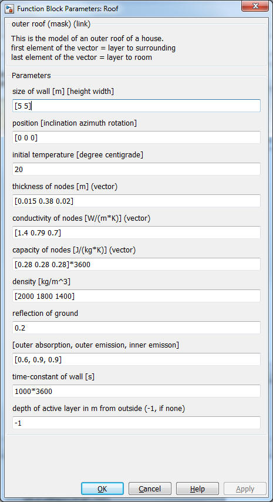

Roof
Roof Path: CARNOT/Load/Houses/wall_floor/
Roof
Path: CARNOT/Load/Houses/wall_floor/
Purpose
Model of a ceiling and roof.
Description
The inner heat transfer
is the same as for a ceiling.
The outer heat transfer to ambient is modeled in two parts:
- Convective heat transfer outer surface according to EN 6946
- Radiative heat transfer to the ground is limited by a view of 0.25, i.e. view
factor to the sky is 0.75 (Frohner, 2005) :
Dynamic, convective heat transfer coefficients according to: Glück B.:
Wärmeübergangskoeffizienten an thermisch aktiven Bauteiloberflächen und der
Übergang zu Basiskennlinien für die Wärmestromdichte; gi Gesundheits-Ingenieur;
128. Jahrgang 2007, Heft 1, Seiten 1-10
The roof itself is modeled by the Beuken model.
For the further description
see wall_out.
NOTE: --
Parameters and Dialog Box

Characteristics
Direct Feedthrough No
Sample
time
Inherited
from driving block
States
corresponding
to the number of nodes
Vectorized
No